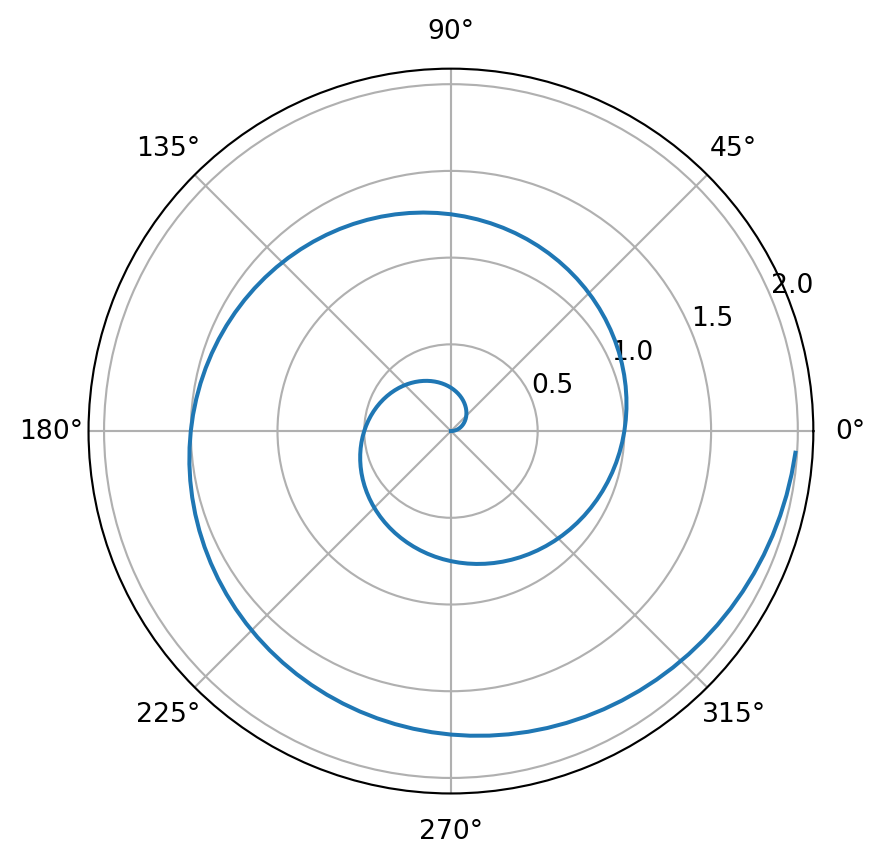

Code
import streamlit as st
import pandas as pd
import matplotlib.pyplot as plt
import numpy as np
import statistics as stt
from scipy import stats
from scipy.optimize import curve_fitThis program is capable of:
Upload data files from Neptune: click the ‘Browse files’ botton, then, use ‘command A’ to choose all ‘.exp’ data files required from Neptune.
Set up parameters for isotopic data: (1). drag slider to choose bacground and signal area. Orange color zone represents background, and blue color zone is signal area. (2). set your outlier factor: with smaller number, more data will be cut as outlier, which can be observed from red spots. (3). set the bulge factor for 11B factor: this is related with bulge correction from 10B, 0.6 here as a factor is defined by Dr. Axel Gerdes. (4). choose your standard for intra-sequence instrumental drift correction: the name, the ‘A/B/C/D’ inside the name of standard, the regression level.
Upload your log fuke from laser: click the ‘Browse files’ botton and choose your laser file. (have a check if it is matched with isotopic data.)
Choose the folder which have all datafiles. Use bacground_sub function to correct the background for all datafiles; 2. Choose one sample as standard sample to calculate 11B/10B, and 11B Intra-sequence Instrumental drift with regression function. Correction factor from each datafile will be returned. 3. Multiply 11B/10B correction factor and calculate Boron isotopic values and erros. 4. Mapping calculate Boron isotopic values and laser parameters. 5. Multiply 11B correction factor and the volume factor to 11B signal for B concentrations. 6. Use prepare_trace function to prepare trace elements data from Element XR and merged with upper results.
A brief description how the input file should look like, how data files should be labelled, etc. Screenshots would be helpful, and we should have a demo dataset in the repo
The raw data file should be a folder composed by .exp or .csv files and the name of these files should in a format of sequence number and sample type, e.g. ‘001-A’, ‘002-B’.
Each file should at least have 4 columns for calculation: ‘9.9’, ‘10B’, ’10.2’, ‘11B’. Titles of data columns are in the 23th row. So, data starts in the 24th row and ends roughly in the 200th row, depends on the number of measuring cycles. Data in each column is sorted by time or cycle, the former part is noise, then, signal. Data increases rapidly from noise to signal (fig.).
Required packages
import streamlit as st
import pandas as pd
import matplotlib.pyplot as plt
import numpy as np
import statistics as stt
from scipy import stats
from scipy.optimize import curve_fitUploading files, multiple files and only .exp files are allowed.
uploaded_files = st.file_uploader('upload files', type=['.exp'], accept_multiple_files=True)2023-02-27 07:11:49.591
Warning: to view this Streamlit app on a browser, run it with the following
command:
streamlit run /opt/anaconda3/lib/python3.8/site-packages/ipykernel_launcher.py [ARGUMENTS]-> Include here explanations of what the functions do to the data, e.g., why the regression, why higher orders: or – why the subtraction of the backgrounds, what two backgrounds exist: the ‘normal’ one, and one from an unknown source
dirFiles(fDir, ending)
In the raw data folder, there are hundreds of datafiles in different type. dirFiles helps to read all names of datafiles in working folder-fDir, ending is related with the type of datafile which we are gonna work on, can be ‘exp’ or ‘csv’.
def selSmpType(dataFiles)
get the number in the name of datafile. The number represents its sequence number, which will be used for Instrumental drift correction.
def selSmpType(dataFiles):
l = []
for file in dataFiles:
l.append(float(file.split('_')[0]))
return ldef outlierCorrection(data, factorSD)
outlier rejection of data, data is out of factorSD times of standard deviation will be taken as outliers.
def outlierCorrection(data, factorSD):
element_signal = np.array(data)
mean = np.mean(element_signal, axis=0)
sd = np.std(element_signal, axis=0)
return [x for x in data if (x > mean - factorSD * sd) and (x < mean + factorSD * sd)]def parseBoronTable(file)
def parseBoronTable(file):
#content = file.read()
content = file.getvalue().decode("utf-8")
fname = file.__dict__["name"]
_start = content.find("Cycle\tTime")
#print(_start)
_end = content.find("***\tCup")
#print(_end)
myTable = content[_start:_end-1]
#print(myTable)
cleanFname =f"temp/{fname}_cleanTable"
with open(cleanFname ,"w") as _:
_.write(myTable)
df = pd.read_csv(cleanFname,
sep='\t',
#dtype="float" #not working -->time
)
return df, fnamedef bacground_sub(folder, select_line, factorSD, factor_B11)
background subtraction. Folder contains all datafiles that need to be calculated. For 10B data, values above select_line will be considered as signal, and values below is taken as noise. The same noise and signal interval will apply to ‘9.9’, ’10.2’ and ‘11B’. So, noise in different cups will be subtracted. Then, the average value of ‘9.9’ and ’10.2’ will be used for additional background subtraction for each row of 10B, factor_B11 times the average value of ‘9.9’ and ’10.2’ will be taken as additional background subtraction for 11B. The last step is calculating the average of 11B/10B, results is out of factorSD times of standard deviation will be taken as outliers. the average of 11B/10B, standard deviation and name of datafile will be returned.
def bacground_sub(select_line, factorSD, factor_B11):
#fNames_tmp = sorted(st.session_state.fNames)
average_B = []
for i in st.session_state.uploaded_files:
#read data
#filename = fNames_tmp[i]
#df = pd.read_csv(uploaded_files[i].read())
df_data, filename = parseBoronTable(i)
#print(df)
#read all data rows and select useful columns
# fil = df['10B'].str.contains('L|IC|C|H') == True
# endnum = df['10B'][fil].index[0]
df_data = df_data[['9.9', '10B', '10.2', '11B']].astype(float)
#seperate two dataframe based on selectline, one is background, one is signal
index_select = df_data['10B'] >= select_line
df_bacground_mean = df_data[~index_select].mean()
df_signal = df_data.loc[index_select]
# #substract background, substract bulc for 10B and 11B
df_bacground_sub = df_signal - df_bacground_mean
df_bacground_sub['10B_bulc_sub'] = df_bacground_sub['10B']-(df_bacground_sub['9.9']+df_bacground_sub['10.2'])/2
df_bacground_sub['11B_bulc_sub'] = df_bacground_sub['11B']-factor_B11*(df_bacground_sub['9.9']+df_bacground_sub['10.2'])/2
df_bacground_sub['11B/10B'] = df_bacground_sub['11B_bulc_sub']/df_bacground_sub['10B_bulc_sub']
res_iso = outlierCorrection(df_bacground_sub['11B/10B'], factorSD)
res_11B = outlierCorrection(df_bacground_sub['11B'], factorSD)
average_B.append({'filename': filename, '11B': np.mean(res_11B), '11B/10B_row': np.mean(res_iso), 'se': np.std(res_iso)/np.sqrt(len(res_iso))})
df = pd.DataFrame(average_B)
st.session_state.average_B = df
return dfdef polynomFit(inp, *args)
used for regression function.
def polynomFit(inp, *args):
x=inp
res=0
for order in range(len(args)):
res+=args[order] * x**order
return resdef regression(x, y, ref_stand, order, listname)
get the correction of the Intra-sequence Instrumental drift. x is the list of standard sample’s sequence number, and y is the calculated average 11B/10B of standard sample from bacground_sub function. ref_stand is the reference 11B/10B value of standard. Order is the level of poly regression function. Listname is the sequence number list of all datafiles. O
def regression(x, y, ref_stand, order, listname):
x_use = np.array(x)
popt, pcov = curve_fit(polynomFit, xdata=x_use, ydata=y , p0=[0]*(order+1))
fitData=polynomFit(x_use,*popt)
res = []
for unknown in listname:
y_unknown = ref_stand / polynomFit(unknown,*popt)
res.append({'factor': y_unknown})
return(pd.DataFrame(res))def regression(x, y, ref_stand, order, listname)
def regression_plot(x, y, ref_stand, order, listname):
fig, ax = plt.subplots()
ax.plot(x, y, label='measuered', marker='o', linestyle='none' )
x_use = np.array(x)
popt, pcov = curve_fit(polynomFit, xdata=x_use, ydata=y , p0=[0]*(order+1))
fitData=polynomFit(x_use,*popt)
ax.plot(x_use, fitData, label='polyn. fit, order '+str(order), linestyle='--' )
ax.legend(loc='upper left', bbox_to_anchor=(1.05, 1))
return figdef prepare_trace(datafile)
delete useless information from all columns titles and change the data format to float.
def prepare_trace(datafile):
if 'LR' in datafile.columns[14]:
del datafile['44Ca(LR)']
del datafile['26Mg(LR)']
else:
del datafile['44Ca']
del datafile['26Mg']
datafile.columns = datafile.columns.str.replace('\d+', '')
datafile.columns = datafile.columns.str.replace('\('+'LR'+'\)', '')
res = []
for i in range(13, len(datafile.columns)):
for j in datafile.iloc[:, i]:
if '<' in j:
res.append(j)
RES = datafile.replace(to_replace = res, value='nan', regex=True)
RES2 = RES.replace({'ERROR: Error (#1002): Internal standard composition can not be 0': np.nan})
RES3 = RES2.replace({'ERROR: Error (#1003): Calibration RM composition does not contain analyte element': np.nan})
RES4 = RES3.iloc[:, 13:].astype(float)
columns = RES3.iloc[:, 13:].columns
RES4[columns] = RES3.iloc[:, 13:]
RES4[' Sequence Number'] = RES3['LB#']
return(RES4)What exactly is the output, likely best with screen shots.
–>’Sequence Number’ column: the number of datafile in all sequence. –>The ‘Comment’ column: sample name, labelled by yourself when measuring. –> ‘Spot size (um)’, ‘Laser HV (kV)’, ‘Laser Energy (mJ)’: useful information selected from laser parameters. –>The ‘filename’ column: name of datafile. –>from ‘11B’ to ‘factor_iso’: all results from Neptune. ’[B]_corrected’ is calculated B concentrations from 11B. ‘δ11B’ and ‘δ11B_se’column are calculated isotope results and erros. –>from ‘Li’, ‘B’ to ‘U’ are all trace element results from Element XR.
(the following is copied from what was a ‘text’ file.) 1. csv files are changed from original .exp file 2. data automatically from machine can be found in ‘data/original data type’.
For a demonstration of a line plot on a polar axis, see Figure 1.
import numpy as np
import matplotlib.pyplot as plt
r = np.arange(0, 2, 0.01)
theta = 2 * np.pi * r
fig, ax = plt.subplots(
subplot_kw = {'projection': 'polar'}
)
ax.plot(theta, r)
ax.set_rticks([0.5, 1, 1.5, 2])
ax.grid(True)
plt.show()